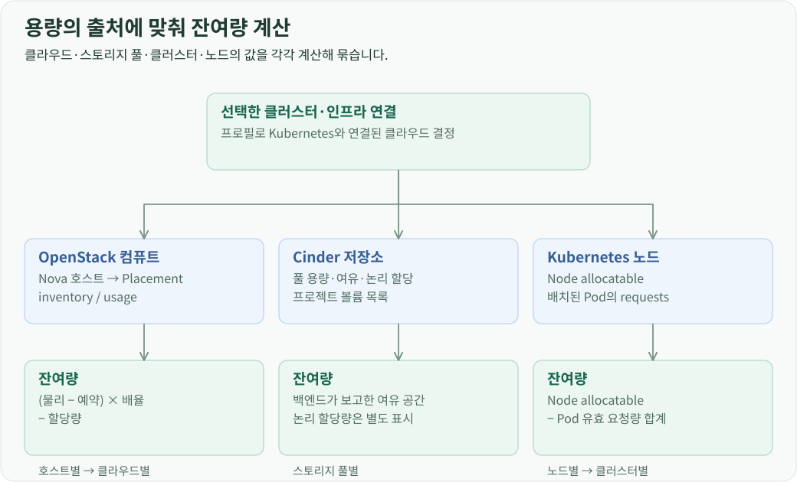
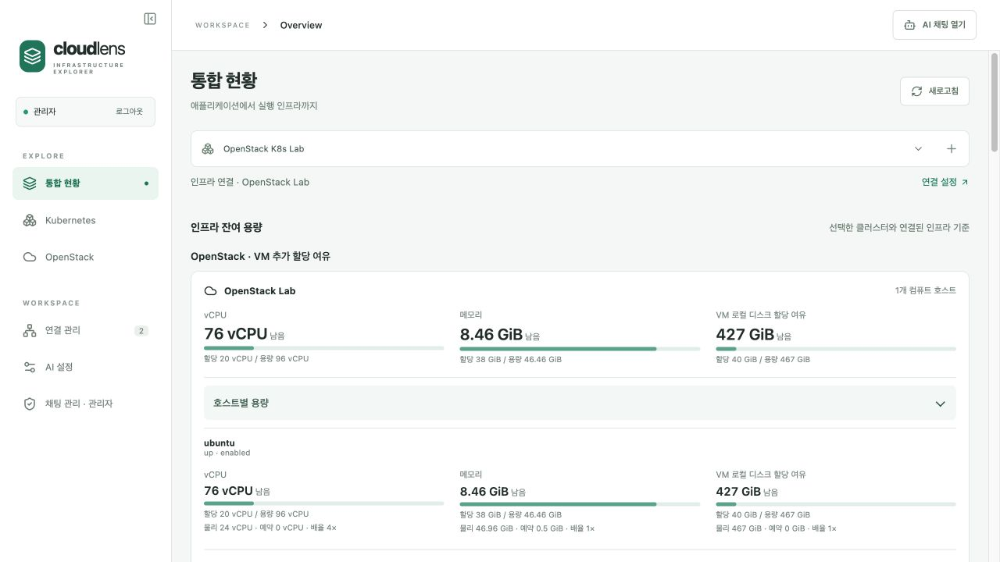

개요
통합 현황의 인프라 용량은 OpenStack의 VM 할당 여유, Cinder의 저장소 여유, Kubernetes의 Pod 요청 기준 여유로 나눕니다. 각 API가 제공하는 용량과 할당 정보를 해당 단위로 계산하고, 클라우드·클러스터·노드 순서로 묶어 표시합니다.
연결 프로필에서 집계 대상 결정
화면이 선택한 Kubernetes 연결 ID를 보내면 서버는 그 프로필의 인프라 연결을 읽습니다. OpenStack에 연결된 클러스터이면 대상 클라우드의 컴퓨트 호스트 용량과 클러스터의 노드 용량을 함께 조회합니다. Cinder는 해당 클라우드의 스토리지 용량 API로 조회합니다.

OpenStack 컴퓨트 호스트
Nova의 hypervisor 목록으로 컴퓨트 호스트를 식별하고, 호스트에 대응하는 Placement resource provider의 inventory와 usage를 조회합니다. inventory에는 물리 용량, 예약량, 할당 배율이 있고 usage에는 이미 할당한 양이 있습니다.
할당 가능한 용량 = (total − reserved) × allocation_ratio
추가 할당 여유 = 할당 가능한 용량 − usage
CPU는 VCPU·PCPU, 메모리는 MEMORY_MB, VM 로컬 디스크는 DISK_GB 항목을 계산합니다. 화면은 호스트별로 물리 용량·예약량·배율·할당량·잔여량을 표시하고, 클라우드 카드에서는 같은 자원 종류의 값을 합산합니다. 호스트의 up/down과 enabled/disabled 상태도 함께 제공합니다.
예를 들어 VCPU inventory가 24, 예약량이 0, 배율이 4이면 할당 가능량은 96 vCPU입니다. usage가 18이면 추가 할당 여유는 78 vCPU로 표시됩니다. 이 수치의 기준은 Placement의 할당 기록입니다.

Cinder 풀과 프로젝트 볼륨
Cinder에서는 백엔드 풀의 전체 용량, 보고된 여유 공간, 논리 할당량, 예약 비율과 thin provisioning 설정을 가져옵니다. 풀별 카드에 각 값을 표시하고, 프로젝트 볼륨 목록에는 크기·상태·연결 수를 제공합니다.
풀의 여유 공간은 백엔드 보고값을 사용하고, 논리 할당량은 별도 항목으로 표시합니다. 프로젝트 볼륨의 크기를 합산한 값도 함께 제공하므로 백엔드 공간과 프로젝트가 요청한 볼륨 용량을 각각 볼 수 있습니다. 공유 저장소가 여러 풀에 노출되는 경우를 고려해 풀 수치를 임의로 하나의 전체 용량으로 합치지 않고 풀별로 유지합니다.
Kubernetes 노드별 Pod 요청량
Node의 status.allocatable에서 해당 노드에 배치된 Pod의 요청량을 빼 CPU와 메모리 잔여량을 계산합니다. spec.nodeName으로 Pod를 노드에 배정하고, 종료된 Pod는 요청량 집계에서 제외합니다.
Pod 요청량은 일반 컨테이너의 requests 합계에 init 컨테이너의 실행 순서와 재시작형 init 컨테이너를 반영합니다. 초기화 단계의 최대 요구량과 실행 단계의 요구량 중 큰 값을 사용합니다. Pod 단위의 spec.resources.requests가 있으면 해당 자원은 그 값을 사용하고, 여기에 Pod overhead를 더합니다. CPU quantity는 cores, 메모리 quantity는 바이트로 변환해 합산합니다.
노드별 요청량 = 해당 노드에 배치된 Pod의 유효 요청량 합계
노드별 잔여량 = Node allocatable − 노드별 요청량
클러스터 잔여량 = 노드별 잔여량 합계
응답에는 노드의 Ready 조건, cordon 여부와 taint도 포함합니다. 화면은 CPU·메모리 잔여량 옆에 이 배치 조건을 표시합니다. 아직 노드에 배정되지 않은 Pending Pod는 별도 수로 집계합니다.
계산 결과의 표시
각 자원은 total, used, remaining과 단위를 가진 공통 형식으로 반환합니다. OpenStack에는 physical·reserved·allocation_ratio를, Kubernetes에는 노드 상태와 자원 상세 이동 대상을 추가합니다.
필수 원본 값이 없으면 계산 결과를 null로 유지합니다. 프론트엔드는 값이 있는 항목에만 수치와 비율 막대를 그립니다. 용량 화면의 계산은 서버에서 수행하고, 화면은 계층별 묶음과 단위 변환을 담당합니다.